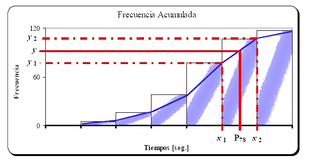
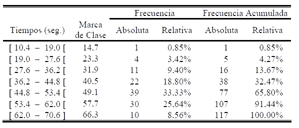
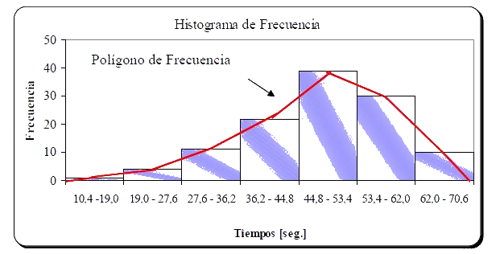
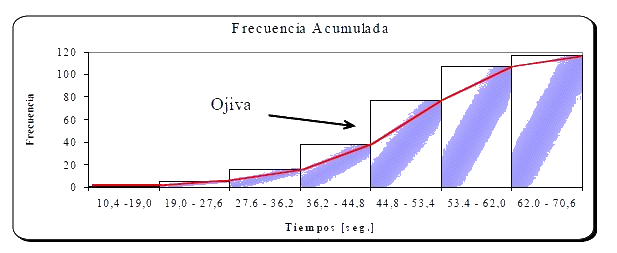
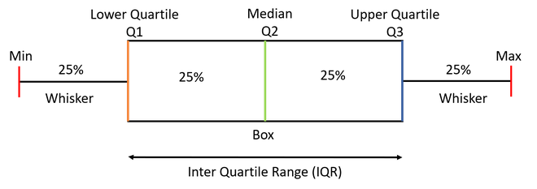

Estadística para ciencias físicas
LFIS 325 - 2022/02
Eloy Alvarado Narváez
Universidad de Valparaíso
01/09/22
Estadística descriptiva
Medidas de posición
Una medida de posición es un valor simple que se calcula para un grupo de datos y que se utiliza como una manera de resumir a estos un valor dentro del rango de los datos.
Normalmente se desea que el valor sea representativo de todos los valores incluidos en el grupo, estos valores pueden estar relacionados con posiciones de particular interés como los extremos, los cuales se asocian a cuantiles, o valores del centro, llamados de tendencia central.
Media aritmética
Se define como el cociente de la suma de todos los valores entre el número total de valores. Las expresiones para cálculo de la media de una población y de una muestra son, respectivamente:
\[\mu = \dfrac{\sum_{i=1}^{N}X_i}{N}, \hspace{20pt} \overline{x} = \dfrac{\sum_{i=1}^{n} X_i}{n}\]
Cuando se tiene a disposición sólo los datos agrupados, se utiliza el punto medio de cada clase como aproximación de todos los valores contenidos en ella. El punto medio o marca de clase se representa por \(m_i\), en donde el subíndice \(i\) indica la clase \(i-\)ésima, y se utiliza \(n_i\) para representar la frecuencia absoluta observada en la clase respectiva. En tal caso, las expresiones son:
\[\mu = \dfrac{\sum_{i=1}^{k} n_i m_i}{N}, \hspace{20pt} \overline{x} = \dfrac{\sum_{i=1}^{k} n_i m_i}{n}\]
## Mediana
Es el valor que ocupa el lugar central de estos cuando se ordenan en orden de magnitud. Para conjunto de datos, con un número par de elementos, la mediana se calcula como el promedio de los valores centrales. En caso de trabajar con datos dispersos, la expresión para determinar la posición de la mediana en el conjunto (ordenado) es:
\[Me=\begin{cases} X_{\left(\dfrac{n+1}{2}\right)}, &\text{Si }n\text{ es impar} \\ \dfrac{1}{2}\left(X_{\left(\dfrac{n}{2}\right)} + X_{\left(\dfrac{n}{2}+1\right)}\right), &\text{Si }n\text{ es par} \end{cases}\]
Mediana: datos agrupados
Para datos agrupados, en primer lugar es necesario determinar la clase que contiene el valor de la mediana, para después determinar la posición de la mediana dentro de la clase mediante interpolación. La clase que contiene la mediana es la primera clase cuya frecuencia acumulada es mayor o igual a la mitad de los datos. Una vez que se identifica esta clase, se determina el valor interpolado de la mediana, empleando la siguiente expresión:
\[Me=LI_i+ \left( \dfrac{\dfrac{n}{2}-N_{i-1}}{n_i}\right)a_i\]
En donde \(LI_i\) es límite inferior de la clase que contiene a la mediana, \(n\) el número total de observaciones, \(a_i\) la amplitud de clase, \(N_{i-1}\) la frecuencia acumulada anterior a la clase que contiene la mediana y \(n_i\) el número de observaciones de la clase que contiene la mediana.
Moda
Se define como el valor o clase que se presenta con mayor frecuencia. Para datos agrupados, se utiliza interpolación dentro de la clase modal, de acuerdo a la siguiente expresión:
\[Mo=LI_i+ \left(\dfrac{d_1}{d_1+d_2} \right)a_i\] en donde,
\(LI_i\) es el límite inferior de la clase que contiene la moda.
\(d_1\) es la diferencia entre la frecuencia de la clase modal y la frecuencia de la clase que le precede.
\(d_2\) es la diferencia entre la frecuencia de la clase modal y la frecuencia de la clase que le sigue.
\(a_i\) es la amplitud de clase.
Cuantiles
Son medidas de posición que dividen los datos en grupos bajo los cuales se encuentra una determinada proporción de éstos, por lo se requiere que los datos se encuentren en al menos escala ordinal.
Cuartil: \(Q_{i}=X_{\left(\dfrac{i(n+1)}{4}\right)}, \hspace{20pt} i:1,2,\dots,4\)
Quintil: \(K_{i}=X_{\left(\dfrac{i(n+1)}{5}\right)}, \hspace{20pt} i:1,2,\dots,5\)
Decil: \(D_{i}=X_{\left(\dfrac{i(n+1)}{10}\right)}, \hspace{20pt} i:1,2,\dots,10\)
Percentil: \(P_{i}=X_{\left(\dfrac{i(n+1)}{100}\right)}, \hspace{20pt} i:1,2,\dots,100\)
Cuantiles: datos agrupados
Para datos agrupados, la fórmula se modifica de acuerdo con el punto fraccionario de interés. Para utilizar esta expresión modificada, en primer lugar se determina la clase que contiene el punto de interés, de acuerdo con las frecuencias acumuladas, y después se lleva a cabo una interpolación como en el caso anterior de la mediana.
Interpolación
En este caso se observa que \(y=\mathbf{y}, x=P_{78}, x_2 - x_1= LS-LI=a\) y \(y_2 - y_1 = N_i - N_{i-1}=n_i\)
Luego despejando \(x=P_{78}\), se obtiene una expresión para el cálculo de percentiles en datos agrupados:
\[x=P_{78}=x_1+\left( \dfrac{y-y_1}{y_2 - y_1} \right)(x_2 - x_1)=LI+\left(\dfrac{y- N_{i-1}}{n_i}\right)a\]
pero \(y\) no es otra cosa que \(\dfrac{n \times j}{100}\), donde \(j\) es el percentil \(j-\)ésimo. Por lo que podemos generalizar la ecuación anterior como:
\[P_j=LI+\left(\dfrac{\dfrac{n\times j}{100}-N_{i-1}}{n_i}\right)a=LI+\left(\dfrac{\dfrac{j}{100}-F_{i-1}}{f_i}\right)a\]
Ejemplo
La siguiente tabla resume los tiempos de espera antes de obtener ciertos resultados experimentales.
Calcular el percentil 80
Medidas de Variabilidad
Las medidas de tendencia central son útiles para identificar un valor “típico” ó “particular” de un conjunto de datos, las medidas de variabilidad se ocupan de describir la dispersión (riesgo, precisión) de los datos con respecto a una medida del centro o un valor particular. Existen varios indicadores para medir la magnitud de la variabilidad en conjuntos de datos, entre ellos:
- Rango
- Desviación media
- Varianza
- Desviación estándar
- Coeficiente de Variación
Rango
Es la diferencia entre el mayor y menor valor del conjunto de datos.
\[R= \begin{cases}\max x_i - \min x_i, &\text{datos dispersos} \\ LS_k -LI_1, &\text{datos agrupados} \end{cases}\]
Desviación media
Es la media (promedio) del valor absoluto de la diferencia entre cada uno de los datos y el promedio del grupo.
\[DM= \begin{cases}\sum_{i=1}^{n}\dfrac{|x_i- \overline{x}|}{n}, &\text{datos dispersos}\\\sum_{i=1}^{k} f_i |m_i - \overline{x}|,&\text{datos agrupados}\end{cases}\]
Varianza
\((V[X],\sigma^2)\) La varianza es similar a la desviación media porque se basa en la diferencia entre cada uno de los valores del conjunto de datos y la media del grupo. Su fórmula es, para su cálculo poblacional y muestral, respectivamente:
\[V[X]=\sigma^2=\sum_{i=1}^{N} \dfrac{(x_i-\mu)^2}{N}\]
\[S^2=\sum_{i=1}^{n} \dfrac{(x_i-\overline{x})^2}{n-1}\] ## Desviación estándar o típica
Se utiliza con mayor frecuencia la raíz cuadrada de la varianza, representada mediante la letra griega \(\sigma\) para el caso poblacional y \(S\) para una muestra:
\[\sigma=\sqrt{V[X]}\]
\[S=\sqrt{S^2}\] ## Coeficiente de variación
Relación entre la desviación estándar y su media. Tiene por fórmula, para su cálculo poblacional y muestral, respectivamente:
\[CV=\dfrac{\sigma}{\mu}\]
\[CV=\dfrac{S}{\overline{x}}\]
Representa la desviación estándar como proporción (o porcentaje) de la media, por lo que es de gran utilidad al comparar dos poblaciones o muestras, pues no posee unidades lo que elimina el efecto de la magnitud de las variables medidas.
Rango intercuartil
Es la diferencia entre los percentiles 75 y 25, esto es RIQ (IQR)\(= Q_3 - Q_1\).
- Representa el 50% central de la población
Gráficos
Un gráfico es otra forma de representar y resumir datos, en el gráfico se pueden hacer evidentes ciertas características que en una tabla de frecuencias pueden pasar inadvertidas. Entre los gráficos más utilizados están:
- Gráfico de barras
- Gráfico de Pastel (o circular)
- Histograma
- Polígono de Frecuencias
- Ojiva
- Box - plot (o diagrama de cajas)
Histograma
Ojiva
Diagrama de caja / box-plot
Construcción box-plot
- Calcular: Mediana, Cuartil 1 y 3 \((Q_{1},Q_{3})\)
- Calcular Rango Intercuartil (RIQ/IQR): \(RIQ=Q_{3}-Q_{1}\)
- Calcular bigotes interiores (superiores e inferiores):
- Bigote inferior: \(\max (Q_{1}-1,5* RIQ, x_{1})\)
- Bigote superior: \(\min (Q_{3}+1,5* RIQ, x_{n})\)
- Calcular bigotes exteriores (superiores e inferiores):
- Bigote inferior: \(Q_{1}-3* RIQ\)
- Bigote superior: \(Q_{3}+3* RIQ\)
- Marcar datos outliers:
- Observaciones entre bigote interior y exterior, se consideran sospechosos de ser outliers.
- Observaciones pasados los bigotes exteriores son outliers.
Ejercicio
Datos:
| \(7,12\) | \(7,89\) | \(10,12\) | \(8,88\) | \(10,02\) | \(9,91\) | \(9,95\) | \(9,90\) |
|---|---|---|---|---|---|---|---|
| \(10,23\) | \(9,12\) | \(9,99\) | \(12,40\) | \(8,65\) | \(10,05\) | \(10,50\) | \(9,87\) |
| \(8,54\) | \(9,72\) | \(11,09\) | \(11,52\) | \(12,30\) | \(11,53\) | \(16,40\) | \(13,24\) |
- Realizar un diagrama de caja
¿Qué veremos la próxima semana?
- Probabilidades básicas
¿Qué deben preparar para la próxima semana?
- Leer capítulo 2 de Probability and Statistics for Engineering and the Sciences, 9th Edition.
LFIS 325 - Semana 2